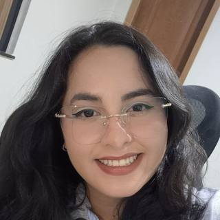

Assistente com RAG sobre as diretrizes da UFPA em breve
Modelo de linguagem rodando localmente que busca trechos das diretrizes e normas da UFPA e responde com base nos documentos oficiais.
Pesquisadora em Machine Learning no Laboratório de Eletromagnetismo Aplicado (LEA/UFPA), bolsista CNPq. Trabalho com detecção de anomalias em redes ópticas, análise de dados clínicos e modelos de linguagem rodando localmente.

Modelo de linguagem rodando localmente que busca trechos das diretrizes e normas da UFPA e responde com base nos documentos oficiais.
Chatbot em Python com Llama 3.2 rodando no Ollama, com prompt de sistema configurável, histórico persistente em JSON e comandos de controle da conversa.
Ver código →App de monitoramento de motoristas. Desenvolvi a API de detecção de sonolência e distração (abertura dos olhos, bocejos e orientação do rosto) e telas do app mobile.
Jogo 2D com motor gráfico próprio em OpenGL Core Profile: shaders GLSL, animação por coordenadas UV, parallax, texturas procedurais e sistema de partículas.
Ver código →Desenvolvimento e comparação de modelos de machine learning semissupervisionados (PCA, KPCA, OCSVM e clustering hierárquico) para detectar falhas em diferentes cenários de redes ópticas, inclusive com pouca disponibilidade de dados de treino.
Análise exploratória e estatística como etapa inicial para modelos de triagem de risco de progressão da escoliose. O tema continua no mestrado (PPGEE/UFPA), com visão computacional.
Laboratório de Eletromagnetismo Aplicado (LEA/UFPA), bolsista CNPq ITI-A.
Instrutora do minicurso de introdução a Python, ITEC/UFPA.
Monitoria bolsista, ITEC/UFPA.
Grupo feminino de robótica da UFPA. Também instrutora de minicursos de Arduino e programação em C.